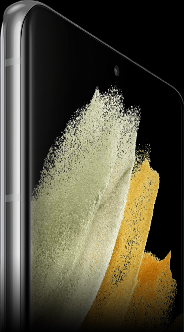
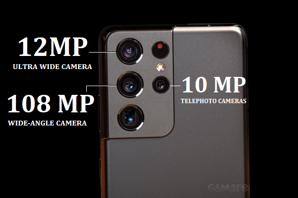
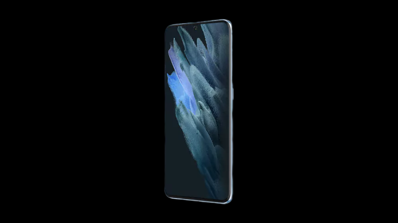
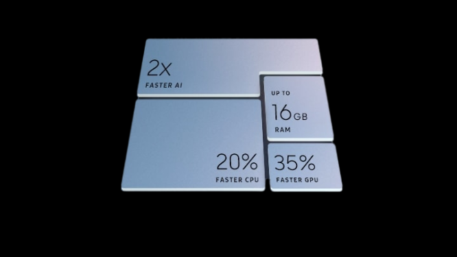
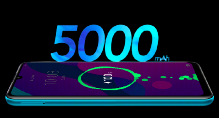

Introducing Galaxy S21 Ultra 5G. Designed with a unique contour-cut camera to create a revolution in photography — letting you capture cinematic 8K video and snap epic stills, all in one go. And with Galaxy's fastest chipset, strongest glass, 5G and an all-day battery, Ultra easily lives up to its name.
Introducing a bold new camera design in a category of its own. It's ultra-sized with a contour-cut camera that seamlessly houses cutting-edge lenses.
COLOURS
Shades of Ultra
DISPLAY
Easy On The Eyes

6.8"
2X
120Hz
INFINITY-O-DISPLAY2
DYNAMIC AMOLED 2
EYE COMFORT SHIELD
SUPER SMOOTH 120HZ DISPLAY
50%
100%
MORE CONTRAST 3
COLOR VOLUME
CORNING® GORILLA® GLASS VICTUS™
The Toughest Gorilla Glass Yet
Designed to scratch less and protect both front and back, this is the toughest Gorilla Glass in a Galaxy smartphone.
PRO-GRADE VIDEO
The Video Revolution Begins Here
Goes far beyond cinema resolution.
Take epic portraits right out of 8K video.
8K Video is the highest resolution video available in a smartphone — that's four times as many pixels as 4K. Record in 8K 24fps and get crisp footage that looks better than the cinema, then upload and watch right on YouTube.
And with 8K Video Snap, you can pull epic high-resolution photos straight from 8K video.4 So you don't have to choose between shooting video or stills.
*YouTube is a trademark of Google LLC.
S Pen compatibility means you can finesse and fine-tune while editing your videos down to the last frame, with precision that your finger simply can't touch.
Smooth and steady, yet action-packed
Turn on Super Steady and Galaxy S21 Ultra 5G shoots like an action cam. AI stabilization eliminates the bumps, delivering gimbal-smooth video when you're on the move.
Super Smooth 60fps Video delivers a dynamic frame rate for super-smooth video even in low light. It automatically adjusts the fps so your video stays polished as you go from day to dusk.
The
Resolution
Revolution
continues.
40MP
Selfie Camera

PRO-GRADE CAMERA
The Highest Resolution Possible On A Smartphone
Crop, crop and crop again.
The 108-megapixel camera captures so much detail, you can pinch in and reveal even more shots within.6 This camera quality expresses rich color data for true-to-life details and hues — that don't get washed out in the sun.
100X SPACE ZOOM
One small tap for you, one giant leap for Zoom.
The breakthrough Dual Tele Zoom system now zooms in faster, smoother and sharper than any zoom in the Galaxy series.7 And when paired with the all-new Zoom Lock, shots are more stable than ever.
ORIGNAL
Portraits get a face lift. Studio-like Portrait mode is now enhanced by AI to deliver the ideal lighting in your photos — analyzing faces, lighting angles and direction and mapping depth of field.
NIGHT MODE
Captures night like a Dream.
The Bright Night sensor is our biggest leap in low light photography, capturing bright, vivid colors in the dark of night. Shoot clear images with more speed and significantly less noise, while also controlling exposure time.
WE CALL IT
ULTRA
FOR A REASON.

5NM PROCESSOR
The Fastest Chip Ever In Galaxy

Galaxy's first 5nm processor packs epic power and speed. This outstanding upgrade means faster processing and more intelligence in every aspect of Galaxy S21 Ultra 5G.
*Image simulated for illustration purposes.
*12GB of RAM available with Galaxy Ultra 5G Model and 8GB RAM available with Galaxy S21 Plus and Galaxy S21 5G models.
SECURITY
LOCK IT UP
The Knox security platform delivers a high level of security, protecting your phone from the chip up and giving you more confidence in your data and app permissions. It also features Samsung Knox Vault to keep your biometric authentication data under wraps. And the larger Ultrasonic Fingerprint sensor improves latency and dry finger recognition for fast, accurate unlocking.
INTELLIGENT BATTERY
All-Day Power Has Outdone Itself

Galaxy S21 Ultra 5G's Intelligent Battery outlasts the day — even on 5G. Maxing out at a massive 5000mAh, it combines with the new power-efficient display and processor to live on beyond the 24-hour mark.
Super Fast Charging delivers more than 50% charge in just 30 minutes with the 25W Travel Adapter.
Fast Wireless Charging 2.0 gives you a quick power-up, without the cable.
Wireless PowerShare lets you use your phone to charge your buds, watch or a friend’s phone.
*The USB Implementers Forum, Inc. (USB-IF) was established in 1995 to support and accelerate the market and consumer adoption of USB compliant devices. Galaxy S21 Ultra 5G's Super Fast Charging has been certified to be compliant to the USB standards which means your products have met the highest standards in the industry. This certification can be found on www.usb.org.
STORAGE
Save your Memories with Peace of Mind
With up to 256GB of built-in memory, you can store thousands and thousands of high-resolution photos and videos.
OneDrive lets you automatically sync your files to the cloud so they’re protected and easy to access from all your devices.
WATER RESISTANT
A Little Water Doesn't Hurt
IP68 rated protection.
5G
HyperFast 5G lets you download a whole season of your favorite show in a flash. Our industry-leading 5G-compatible chipset ensures you're one step ahead with every upload and download and HyperFast Wi-Fi, the world's first Wi-Fi 6E, reaches high speeds so you stay connected quickly and reliably.
Dual SIM lets you use a nano SIM and eSIM for two data plans in one device.
GAMING
Epic Performance Beyond This World
From One Big Screen To Another.
Big Screen Chat with Google Duo is a new way to catch up with a friend or loved one, dialing up the fun with colorful backgrounds.It's easy to stay close to those who matter with just a tap.
*Image simulated for illustration purposes.
*Google Duo is a trademark of Google LLC.
Motion Mirror lets you project your phone to your TV so you can follow a workout routine. As you keep in step, you'll see your moves right alongside your instructor.
LINK TO WINDOWS
Your Phone, On Your PC
Experience the power of running mobile apps right from your Windows 10 PC. Pin apps to the Start menu or taskbar for easy access and get right to work — it all starts when you connect your Galaxy phone to Your Phone Apps.
*Users must link their Galaxy smartphones to their Windows 10 PC through 'Link to Windows’ on phone and Your Phone App on PC, follow the set-up prompts, including being signed into same Microsoft account. Link to Windows is preloaded on select Galaxy devices. Some Link to Windows features may require Galaxy smartphone to be on and connected to the same Wi-Fi network as the PC.
*Some mobile apps may restrict content to be shared on other screens or may require a touch screen to be able to interact with them.
Discover The Epic Galaxy S21 Series.
Want to know what makes the Galaxy S21 series epic in every way?
Watch the video and discover all about its revolutionary camera, unbeatable
performance, and incredible viewing experience!
GALAXY SMART TAG
Keep Tags On What's Important
Use Galaxy SmartTag on the things you normally lose, like your keys or your wallet. The SmartThings Find app on Galaxy S21 Ultra 5G tells you the object's last location, making it easy to track it down. Tag it. Find it. Simply smart.
S Pen Is Precision At Your Fingertips.
That's right, it's the first S Pen for the Galaxy S series — rewriting the rules for mobile by delivering an incredibly realistic pen feeling.
Galaxy Buds Pro make everyday sounds more epic, syncing so easily it's like they're an extension of Galaxy S21 Ultra 5G. One tap and you're hearing clear, defined audio.
WHAT'S IN THE BOX
What You Need For An Epic Experience
Start 2021 off light. It's packaged with what you need — and nothing that will clutter up your drawers.
Including:
USB Type-C data cable
Ejection pin
Quick Start Guide
*Travel adapter sold separately.
*Some of the listed components may not be available depending on the model you purchase or the country or region you live in.
ACCESSORIES
Ultra Has Even More Up Its Sleeve
*All specifications and descriptions provided herein may be different from the actual specifications and descriptions for the product. Samsung reserves the right to make changes to this document and the product described herein, at anytime, without obligation on Samsung to provide notification of such change. All functionality, features, specifications, GUI and other product information provided in this document including, but not limited to, the benefits, design, pricing, components, performance, availability, and capabilities of the product are subject to change without notice or obligation. The contents within the screen are simulated images and are for demonstration purposes only.
Color availability may vary depending on country or carrier.
Measured diagonally, Galaxy S21 Ultra 5G's screen size is 6.8" in the full rectangle and 6.6" with accounting for the rounded corners; actual viewable area is less due to the rounded corners and camera hole.
When compared to the previous S series.
8K Video Snap produces photos up to 33MP.
Supported only in Full HD resolution.
Maximum image cropping is subject to display resolution and the original image size.
100X Space Zoom includes 10x Hybrid Optic Zoom and 100x digital zoom with AI Super Resolution technology. Zooming in past 10x may cause some image deterioration.
Typical value tested under third-party laboratory condition. Typical value is the estimated average value considering the deviation in battery capacity among the battery samples tested under IEC 61960 standard. Rated (minimum) capacity is 4855mAh for Galaxy S21 Ultra 5G. Actual battery life may vary depending on network environment, usage patterns and other factors.
Estimated against the usage profile of an average/typical user. Independently assessed by Strategy Analytics between 2020.12.07-12.18 in USA and UK with pre-release versions of SM-G998 under default setting using 5G Sub6 networks (NOT tested under 5G mmWave network). Actual battery life varies by network environment, features and apps used, frequency of calls and messages, number of times charged and many other factors.
Based on Super Fast Charging results from internal Samsung lab tests, conducted with 25W Travel Adapter while it has 0% of power remaining, with all the services, features and screen turned off. Actual charging speed may also vary depending on the actual usage, charging conditions and other factors. 25W Travel Adapter sold separately.
Fast Wireless Charging 2.0 at 10W or higher is currently available with Wireless Charger Stand (EP-N5200) and Wireless Charger Duo Pad (EP-P5200). Wireless Chargers sold separately. Other wireless chargers compatible with WPC support wireless charging under 5W. Actual charging speed may vary depending on the actual usage, charging conditions and other factors. Wireless charger requires power connection. Recommend using Samsung charging cable and/or travel adapter for optimal performance.
Limited to Samsung or other brand smartphones with Qi wireless charging, such as Galaxy S21 5G, Galaxy S21+ 5G, Galaxy S21 Ultra 5G, Galaxy Z Fold2, Galaxy Note20, Galaxy Note20 Ultra, Galaxy S20, S20+, S20 Ultra, Z Flip, Note10, Note10+, S10e, S10, S10+, Fold, S9, S9+, S8, S8+, S8 Active, S7, S7 edge, S7 Active, S6, S6 edge, S6 Active, S6 edge+, Note9, Note8, Note FE, Note5 and wearables such as Galaxy Buds Pro, Galaxy Buds Live, Galaxy Watch3, Galaxy Watch Active2, Galaxy Watch Active, Gear Sport, Gear S3, Galaxy Watch and Galaxy Buds. If battery power is lower than 30% Wireless PowerShare may not function. May not work with certain accessories, covers, other brand devices or some Samsung wearables. May affect call reception or data services, depending on your network environment.
Actual number of photos and videos that can be stored depends on your camera setting. Actual storage space availability may vary depending on pre-installed software and by country, model, file size and format.
Available in 512GB, 256GB and 128GB. Actual storage available may vary depending on pre-installed software.
Requires initial setup of OneDrive syncing on Galaxy device. Start with 5GB of free cloud storage or upgrade to a subscription for more storage. App availability and experience may vary by region and device.
Galaxy S21 Ultra 5G is rated as IP68. Based on test conditions for submersion in up to 1.5 meters of freshwater for up to 30 minutes. Not advised for beach or pool use.
Requires optimal 5G connection. Actual speed may vary depending on country, carrier and user environment.
The bandwidths supported by the device may vary depending on the region or service provider.
5G network availability may vary depending on the country, network provider and user environment.
Availability and actual quality may vary depending on network conditions, country and carrier.
Availability of dual SIM may vary depending on country or carrier. Nano SIM card sold separately. Use of eSIM on Galaxy device may be enabled by software update or disabled in some countries where it is purchased. Availability of eSIM mobile plan may vary depending on carrier.
Available only on smart TVs that support Miracast.
Motion Mirror only available on the selfie camera.
Galaxy SmartTag sold separately.
All devices must be registered with SmartThings to receive smart notifications. Requires Samsung Account login, connection to Wi-Fi or data network and configurating settings in the SmartThings Find app.
S Pen latency may vary by app. S Pen sold separately.
Bluetooth and wireless control functions not supported on S Pen.